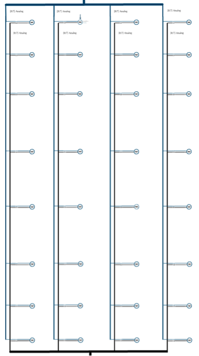
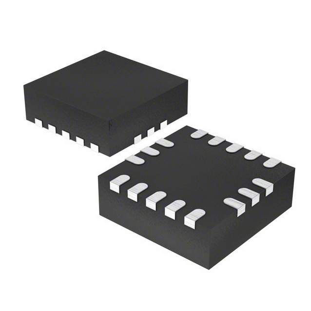
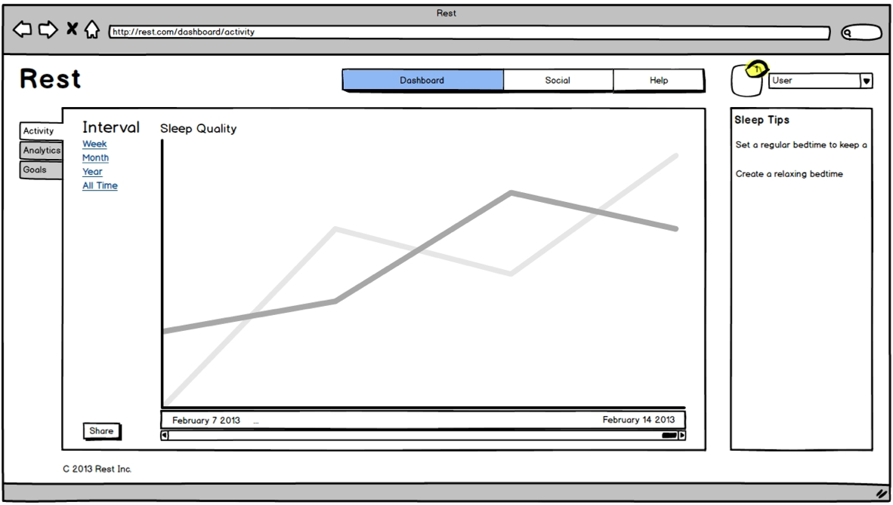

Rest is a sleep monitoring system capable of measuring a user's sleep
activity while not interfering with their natural sleeping habit. Rest
automatically records a user's sleep activity and then uploads the
data to a web server for analytics processing.
Our technology utilizes a combination of sensors to scientifically
determine a user’s sleeping cycle, through actigraphy, as well as
their sleeping posture. Using the sleep data, the system provides
visual metrics such as sleep efficiency and posture to the user
through a web interface.
Rest aims to provide accurate sleep metrics to individuals that
suffer from sleep disorders such as sleep apnea and insomnia, or just
want to optimize their daily performance, in the comfort of their own
home.
Background
As technology becomes more accessible, consumers are able to gain more
insights on their daily performance and habits, and use the feedback
to improve overall quality of life. However, one major component of
our daily routine has not been sufficiently explored, and that is sleep.
Although poor rest quality and health symptoms such as diabetes have been
publicly correlated [1], sleep information such as efficiency and posture
are still not easily accessible to average consumers due to the cost and
inconvenience of evaluation methods.
Needs Assesment
People are often not getting enough high quality sleep that they need,
and do not have the accurate and accessible insight required to improve
their sleeping habits. For example, diagnosis for insomnia is difficult
due to data ambiguity, and would be a lot more defensible with
quantifiable criteria and results. [1] A non-intrusive and cost-effective
method is needed to inform people of their behaviour, and provide
suggestions to benefit their overall quality of life.
Objective
Problem Formulation
Design a non-intrusive and cost-effective system to monitor and
visualize sleep history for the purpose of identifying sleeping
patterns, and offering suggestions for improvement.
Goal
To design and manufacture an affordable device capable of accurately
measuring and visualizing a person’s sleep behavior while not
interfering with their natural sleeping habit.
Objectives
Does not interfere with user’s natural sleeping habit
Record movement data and determine when the user is sleeping.
Identify sleep stages from recorded data.
Waterproof, dustproof, and shockproof for 1 year.
Technology
The system uses a fusion of accelerometers and force sensing resistors
to capture movement data as well as a user profile to detect posture.
These sensors can be embedded into or placed under the bed sheets.
This approach takes advantage of the different types of sensors to
accurately capture relevant data to the sleep analysis. It can also
be install non-intrusively under the bed sheet, with little hassle to
install.
The software is used to record the data, implement the analysis
algorithm and present it to the user. It pipelines the data along
different platforms from the sensor capture to the presentation to
the user.
Sensor Matrix

For a standard single mattress, the sensor matrix consists of 30 force
sensing resistors in a 6x5 grid. The force sensing resistors measure
the user's weight distribution and the system can then determine the
user's sleeping position.
Accelerometer

The system has two accelerometers, placed on opposite corners of the
bed, which measure the user's sleep movement for further analysis.
Microcontroller
The microcontroller platform is the Arduino Uno. The Aruino is
responsible for integrating the sensors to the software of the
system.
Software

The software can be separated into five main components:
Data capture
Data transfer
Data storage
Data analysis
Data presentation
Data Capture
The microcontroller interfaces with the accelerometers through I2C and
the force sensing resistors through analog inputs.
Data Transfer
The data transfer occurs over the Internet using a Wi-Fi shield
connected to the microcontroller.
Data Storage
As the data is transferred to the server, the server stores the data.
Data Analysis
The sleep movement data is analyzed using actigraphy, and correlated to
different sleeping cycles. From the user's weight distribution data is
analyzed, the system can determine the user's sleeping position.
Data Presenation
The sleep data is visually presented to the user in the form of various graphs.
Team
Ali Jangda
Ali Jangda spent his two most recent work terms at Apple Inc. in a
hardware engineering role, and the two prior at ON semiconductor. From
these high demand professional environment, he built an expertise in
hardware and embedded systems that
Ali Jangda is the lead hardware developer, and is in charge of
designing and implementing the sensory platform. He processes the need
statements into specifications for components, and researches the
combination of components and circuitry that is needed to achieve the
optimal performance and cost-effectiveness.
Christopher Wu
Christopher Wu is a dedicated software guru that has a broad array of work
experience at innovative companies across North America, such as
Facebook and Tagged. His extensive history of front-end application
development and back-end server programming will be critical to the
cloud computing and data distribution aspects of this project.
Christopher Wu is the lead software developer, and he is responsible for
creating the backend infrastructure to support the system operation as
well as data analysis and user interface. From the chosen hardware
platform, Chris collects input measurements and applies algorithms to
correlate them to sleep information, and then visually present them
to user for feedback.
Ian Tao
Ian Tao has been a key contributor at six different technology ventures
in Canada over the last five years. His background in the product
development and commercialization of robotic systems and medical
devices makes him the ideal system integration developer and market
researcher. Ian also has industry connections at the Sunnybrook Research
Centre, which would be beneficial to provide resource for data
validation and testing in a clinical setting.
Ian Tao is the intellectual property and commercialization developer,
and his duties include researching existing solutions and ensuring
the product's patentability. He also studies the market gap and
technological availability to tailor the system to the most suitable
audience. It is also his responsibility to reinforce the requirement
and specifications throughout the designing process to stay within
the project scope.
Jordan Chan
Jordan Chan has extensive industry experience as electronic hardware
designer in the consumer section, and also interned as a patent
analyst at Blakes, Cassels and Graydon LLP. His deep understanding of
intellectual property management in addition to his technical skills
is a tremendous asset to creating a new product. Jordan also developed
the ability to research effectively from the patent firm, which makes
him a suitable candidate to ensure the product's functional and
commercial feasibility.
Jordan Chan is the scientific researcher, and focuses on deriving and
proving the correlation between movement data and sleep stages using
actigraphy techniques. He provides the fundamental scientific knowledge
by collecting and comparing results from previously conducted studies
and peer-reviewed journal articles. Also, he devises test plans to
validate system performance, as well as guide the development process
to produce more relevant results.